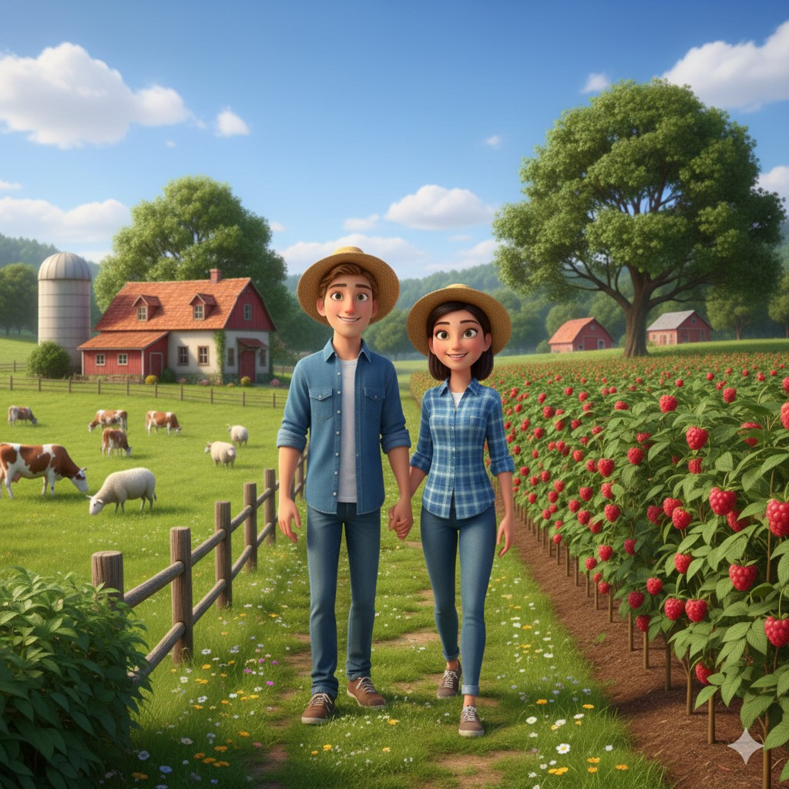
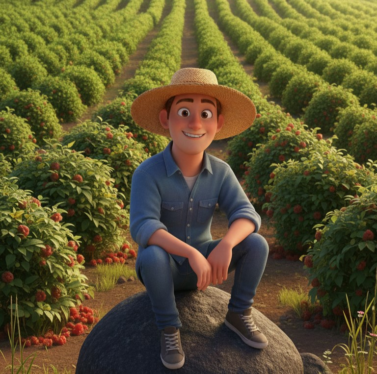

Tradice a láska k půdě se snoubí s moderní ekologií
Příběh farmy, kde se snoubí rodinná tradice, moderní zemědělství a láska k lokálním produktům.
Příběh naší farmy se začal psát kolem roku 2000, kdy můj taťka převzal první hektary a techniku získanou v rámci **majetkového vypořádání** po transformaci zemědělského družstva. Začínal skromně, s pouhými pár hektary a malým stádem ovcí. Postupně, krok za krokem, rozšiřoval půdu a zvětšoval stádo. Založil základ, na kterém dnes můžeme stavět.
I když jsem se narodil v roce 2001 a nejprve vystudoval střední průmyslovou školu zaměřenou na IT, mé srdce mě táhlo zpět k půdě. Následovalo studium na Jihočeské univerzitě (JČU), Zemědělské a technologické fakultě. Bakalářské studium oboru Agropodnikání jsem zakončil **červeným diplomem** a nyní jsem v 5. ročníku navazujícího oboru **Agroekologie se specializací na ekologické zemědělství** (státnice 2026).

Na začátku roku 2025 jsem se rozhodl jít vlastní cestou. Po získání vlastní půdy se zrodil nápad přinést na trh něco neotřelého a zajímavého, s jasným závazkem k udržitelnosti. Tím se stalo **pěstování malin**.
Část naší produkce je určena pro prodej čerstvých plodů, ale velkou část produkce věnujeme **vlastnímu zpracování**. Všechny naše marmelády, džemy a sirupy vyrábíme ručně, s maximální šetrností a bez zbytečné chemie, což je přímý odraz mé specializace na **ekologické zemědělství**.
Váš nákup ze dvora je pro nás přímou podporou lokálního a udržitelného hospodaření.

Neustále se vyvíjíme. Uvažujeme o rozšíření sortimentu o další bobuloviny, jako jsou **ostružiny a borůvky**. Kromě rostlinné výroby plánuji pořídit malé **stádo masného skotu** a po převzetí rodinného podniku od taťky stádo postupně zvětšovat. Naším cílem je propojit ekologické zemědělství s udržitelným chovem a nabízet tak kompletní lokální sortiment nejvyšší kvality.
Děkujeme za vaši podporu lokální produkce!